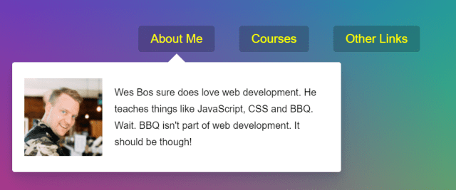

26 — Stripe Follow Along Nav

主題
製作一個隨著滑鼠移動展開的選單效果。
Stripe Follow Along Nav
Github
步驟
Step1. 取得頁面元素與建立基本事件框架
取得頁面元素並分析此次效果僅有兩個事件mouseenter與mouseleave，
確定好知道目前要做的範圍，就先把function框建立好。
1
2
3
4
5
6
7
8
9
10
11
12
13
| // 頁面元素取得
const triggers = document.querySelectorAll('.cool > li');
const background = document.querySelector('.dropdownBackground');
const nav = document.querySelector('.top');
// 滑鼠移入事件
function mousein() {
}
// 滑鼠移出事件
function mouseout() {
}
// 為每個選單加上滑鼠移入/移出事件監聽
triggers.forEach(trigger => trigger.addEventListener('mouseenter', mousein));
triggers.forEach(trigger => trigger.addEventListener('mouseleave', mouseout));
|
Step2. 撰寫移入事件
編寫當滑鼠移入時被觸發的事件，備註如下：
1
2
3
4
5
6
7
8
9
10
11
12
13
14
15
16
17
18
19
20
21
22
23
24
25
26
27
28
29
| // 滑鼠移入事件
function mousein() {
// 替觸發的li加上一個class作為標示已移入
this.classList.add('trigger-enter');
// 當移入時，先檢查是否有trigger-enter這個className
// 若有的話在150毫秒後新增trigger-enter-active這個class
setTimeout(() => this.classList.contains('trigger-enter') && this.classList.add('trigger-enter-active'), 150);
// 新增open這個class
background.classList.add('open');
// 取得滑入元素底下的dropdown
const dropdown = this.querySelector('.dropdown');
// 取得這個dropdown的定位與大小資訊
const dropdownCoords = dropdown.getBoundingClientRect();
// 取得nav的定位與大小資訊
const navCoords = nav.getBoundingClientRect();
// 設定將要給白色滑動背景使用的定位與大小資訊
const coords =
{
height: dropdownCoords.height,
width: dropdownCoords.width,
// 要減去nav的定位，避免上方區塊增加時造成的錯位
top: dropdownCoords.top - navCoords.top,
left: dropdownCoords.left - navCoords.left
};
// 設定白色滑動背景的定位與大小
background.style.setProperty('width', `${coords.width}px`);
background.style.setProperty('height', `${coords.height}px`);
background.style.setProperty('transform', `translate(${coords.left}px, ${coords.top}px)`);
}
|
Step3. 撰寫移出事件
簡單的移除被加上的class：
1
2
3
4
| function mouseout() {
this.classList.remove(‘trigger-enter’, ‘trigger-enter-active’);
background.classList.remove(‘open’);
}
|
css
利用JS取得定位及大小資訊，並在適時置入對應元素中，產生的動畫效果還得靠CSS，這練習主要是靠這兩個來產生效果:
1
2
3
4
5
6
7
8
9
10
11
12
13
14
15
16
| .dropdownBackground {
width: 100px;
height: 100px;
position: absolute;
background: #fff;
border-radius: 4px;
box-shadow: 0 50px 100px rgba(50, 50, 93, .1), 0 15px 35px rgba(50, 50, 93, .15), 0 5px 15px rgba(0, 0, 0, .1);
transition: all 0.3s, opacity 0.1s, transform 0.2s;
transform-origin: 50% 0;
display: flex;
justify-content: center;
opacity: 0;
}
.dropdownBackground.open {
opacity: 1;
}
|